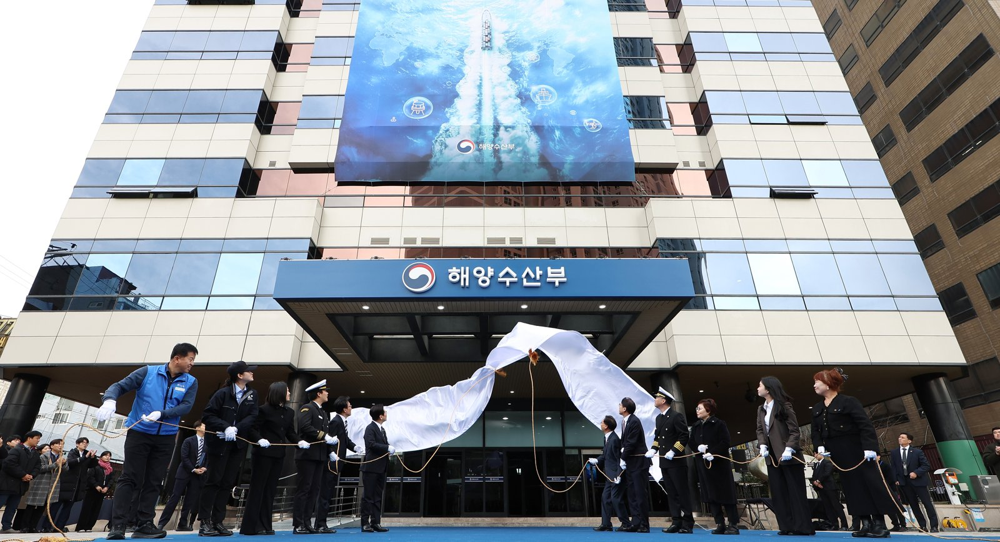
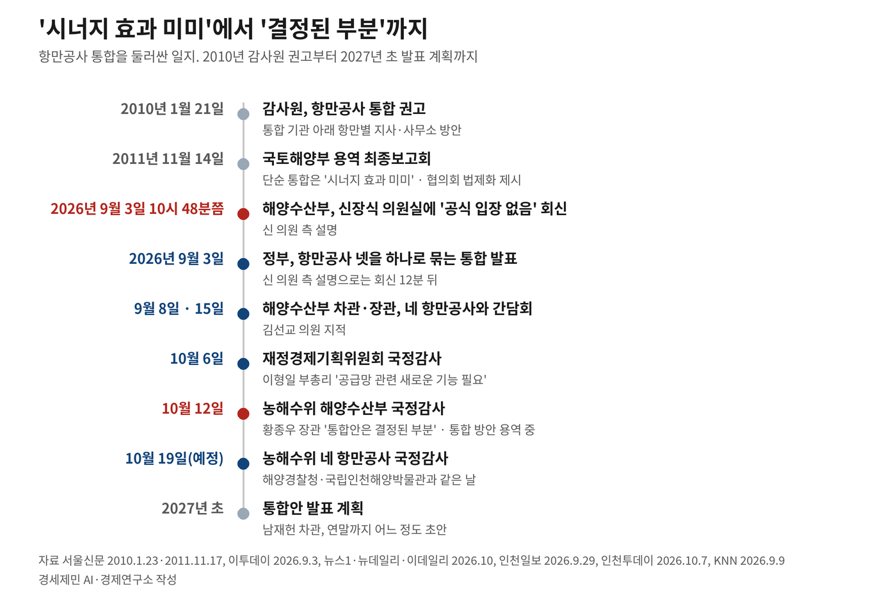
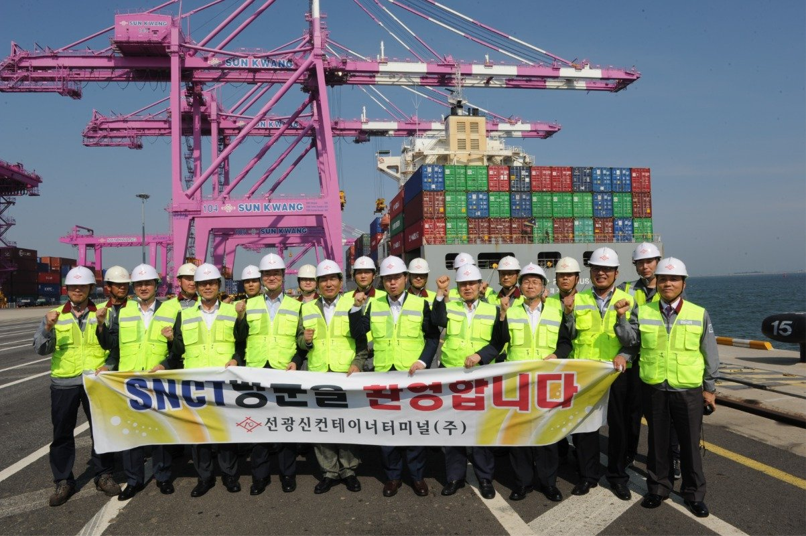
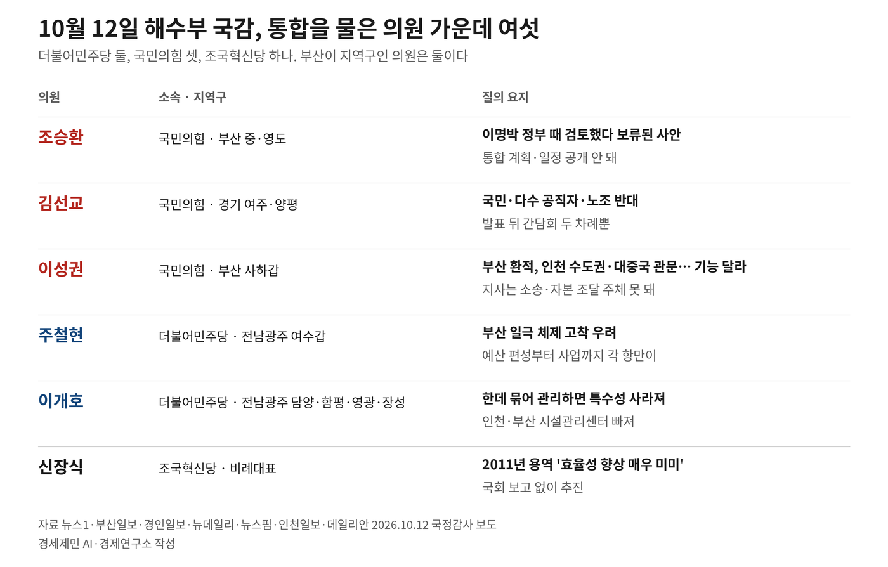
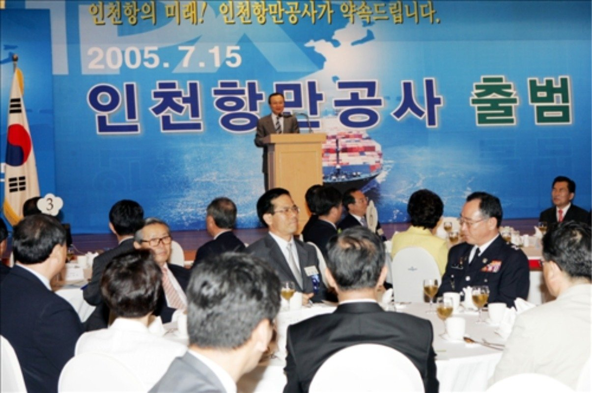

[인천해양주권⑬] 효과 분석 없는 항만공사 통합, 해법은 협력과 분권
발표 12분 전 '공식 입장 없음'…국감선 '결정된 부분'
안트베르펜-브뤼헤항은 합치고도 지분 100% 두 시 몫
AI경세제민=김갑봉 기자 | 신장식 조국혁신당 의원(비례대표)에 따르면 해양수산부는 2026년 9월 3일 신 의원실에 항만공사 통합에 공식 입장이 없다고 회신했다. 신 의원 말로는 정부 발표는 그 12분 뒤였다. 황종우 해양수산부 장관은 10월 12일 국정감사에서 통합안은 결정된 부분이라고 답했다.
국감 질의와 답변, 15년 전 용역, 국회 보고 조항, 의원들의 대안과 해외 사례로 인천항만공사의 지역지사 전환 문제를 짚는다.
'결정된 부분'인데 방안은 아직 용역 중
국회 농림축산식품해양수산위원회(농해수위)는 10월 12일 해양수산부(해수부)를 감사했다. 장소는 부산 동구 해수부 별관이다. 해수부가 2025년 12월 부산으로 옮긴 뒤 처음 받은 국정감사다.

신 의원은 이날 의원실이 받은 회신을 공개했다. 해수부가 답을 보낸 때는 9월 3일 오전 10시 48분쯤이다. 신 의원 측 설명대로면 발표는 오전 11시쯤이다. 이 발표를 전한 인천투데이 속보 입력 시각은 11시 7분이다.
황 장관은 항만공사가 통합 대상이 된 까닭으로 재정경제부 공공기관 통합 원칙을 들었다. 그는 "중복된 기능은 조정하고 지역으로 분산·통합한다는 몇 가지 원칙에 아마 PA가 맞았기 때문"이라고 했다. PA는 항만공사(Port Authority)의 영문 약자다.
조승환 국민의힘 의원(부산 중·영도)은 통합 일정이 공개된 바 없다고 했다. 김선교 국민의힘 의원(경기 여주·양평)은 해수부가 네 항만공사와 만난 횟수를 짚었다. 그의 말로는 발표 뒤 만남은 9월 8일 차관 간담회와 15일 장관 간담회 두 차례다.
황 장관은 김 의원 지적에 "통합안은 결정된 부분"이라고 답했다. 통합 방안은 지금 용역 중이라고 했다. 앞서 9월 30일 해수부 관계자는 개혁안이 통합 기본방향을 먼저 제시한 것이고 구체적인 로드맵은 앞으로 마련한다고 했다.
통합 실무는 해수부 추진반이 맡는다. 반장은 해운물류국장이고 인원은 반장 외 15명이다. 사무실은 해수부 별관에 둔다. 인천항만공사는 파견할 2·3·4급 직원을 1명씩 뽑았다.

2011년 용역, 통합하면 평균 이하
신 의원은 2011년 '항만공사 운영 개선대책 마련을 위한 연구'를 꺼냈다. 이 연구에서 통합에 따른 효율 개선은 매우 미미했다는 게 그의 지적이다. 통합하려면 이 연구를 넘어설 새 효과 분석이 먼저라고 했다.
같은 날 해수부 관계자는 통합 효과를 분석한 자료가 없는 건 맞다고 했다. 정책 환경 변화와 기관 특성을 종합적으로 검토해 결정했다는 설명이다.
감사원은 2010년 1월 국토해양부에 네 기관 통합을 권고했다. 부산·인천·울산항만공사와 한국컨테이너부두공단을 한데 묶는 안이다. 통합기관 아래에는 항만 규모에 맞춰 지사나 사무소를 둔다고 했다.
2011년 연구는 감사원 권고 뒤 국토해양부가 중앙대 동북아물류유통연구소에 맡긴 용역이다. 최종보고회는 2011년 11월 14일 국토연구원에서 열렸다.
연구소는 중복 기능을 단순히 합치면 '일부 예산 절감 효과는 있지만, 전체적인 시너지 효과가 미미할 것'으로 분석했다.
연구소는 항만공사 특성을 고려해 고정자산이 80% 이상인 공기업들과 효율성을 견줬다. 울산·부산항만공사는 평균 이상, 가상 통합기관은 평균 이하로 나왔다.
연구소는 물리적 통합 대신 가칭 '항만공사조정협의회'를 법으로 두자고 제시했다. 항만공사와 지방해양항만청, 지자체가 참여하는 협의회다.
신 의원은 새 분석도 효과가 미미하면 통합을 그만두느냐고 물었다. 황 장관은 15년 사이 항만공사 인원이 두 배로 늘었다고 답했다. 공급망 상황도 달라져 그때 분석을 그대로 쓰기는 어렵다는 설명이다.
공항 보류, 네 항만은 '기능이 다르다'
정부는 9월 3일 항만공사 통합을 발표하면서 인천국제공항공사와 한국공항공사 통합은 보류했다. 통합 기준 질의는 10월 6일 재정경제기획위원회(재경위) 국감에서 먼저 나왔다. 배준영 국민의힘 의원(인천 중구·강화·옹진)은 공항공사 통합은 재검토하면서 항만공사 통합은 왜 추진하느냐고 물었다.
이형일 부총리 겸 재정경제부 장관은 공급망 분야에 새 기능이 필요하다고 답했다. 이준석 개혁신당 의원(경기 화성을)은 항만공사가 대부분 흑자라며 통합 필요성을 따졌다. 이 부총리는 해외 거점 중복 투자도 줄일 수 있다고 했다.
12일 농해수위 국감에서는 이성권 국민의힘 의원(부산 사하갑)이 네 항만의 기능을 나눠 짚었다. 그의 분류로 부산은 환적항, 인천은 수도권·대중국 관문항이다. 울산은 에너지·액체화물항, 여수광양은 철강·석유 산업항이다. 그의 말로는 업종은 같아도 항만마다 기능이 다르다.

이성권 의원은 통합을 종목이 다른 선수들을 한 팀에 섞어 국가대표로 뛰게 하는 일에 빗댔다.
종목마다 따로 잘하게 하겠다는 게 황 장관 답이다. 그가 든 사례는 2019년 8월 출범한 중국 산둥항구그룹(Shandong Port Group)이다. 칭다오항과 옌타이항, 르자오항, 보하이만항구그룹을 합친 회사다. 이 통합은 산둥성 당위원회와 성 정부가 결정했다.
이개호 더불어민주당 의원(전남광주 담양·함평·영광·장성)은 부산항과 광양항의 차이를 들었다. 그의 말로는 부산항은 컨테이너 중심이고 광양항은 철강·석유화학 산업을 받친다. 한데 묶어 관리하면 항만별 특수성이 사라진다는 지적이다.
9월 발표안은 인천항보안공사를 비롯한 보안·시설관리 기관 다섯을 가칭 '한국항만보안시설공단' 하나로 묶는다. 그 다섯에 인천항시설관리센터와 부산항시설관리센터는 없다. 이개호 의원은 관리 기능 일원화라는 목적을 이루려면 두 센터도 넣어야 한다고 했다.

2005년 법인, 발표대로면 지역지사
인천항만공사가 독립 법인으로 문을 연 때는 2005년 7월이다. 9월 3일 발표는 그로부터 21년 만에 나왔다. 발표대로면 네 공사는 '한국항만공사' 아래 지역지사가 된다.

이성권 의원은 독립 법인인 항만공사는 소송과 자본 조달의 주체가 되지만 지사는 그럴 수 없다고 했다. 의사결정 절차도 한 단계 더 생긴다는 지적이다.
지금 항만공사법 제10조는 공사에 항만위원회를 두게 한다. 위원회는 예산과 사업계획과 투자를 심의·의결한다. 제11조는 항만 소재지 시·도지사가 추천한 사람을 위원에 넣게 한다.
시행령 제5조로는 위원 7명 중 3명 이내를 시·도지사가 추천한다. 이 추천 몫에는 항만 이용자단체 대표 1명이 들어간다.
이성권 의원은 통합되면 지자체 추천 위원으로 지역 목소리를 내는 일마저 어려워진다고 했다. 그의 말로는 네 항만공사 주주는 재정경제부와 해수부, 한국해양진흥공사, 한국산업은행, 한국수출입은행 같은 중앙 기관이고 지자체 몫은 없다.
황 장관은 주주총회와 법 개정 절차를 밟으며 지사 전환 뒤 문제가 없게 하겠다고 답했다.
주철현 더불어민주당 의원(전남광주 여수갑)은 부산 일극 체제를 우려했다. 해수부 부산 이전에 이어 항만공사까지 통합되면 해양 분야에서 그 체제가 굳는다는 걱정이 많다고 했다.
박찬대 인천시장은 해수부 국감 닷새 전인 10월 7일 항만공사 통합을 두고 견해를 밝혔다. 그 자리는 민선 9기 출범 100일을 맞아 연 기자회견이다. 통합을 두고 박 시장이 밝힌 첫 공식 입장이다.
박 시장은 인천항의 핵심 결정 권한이 줄거나 지역 투자가 밀리는 방식에는 동의하기 어렵다고 했다. 내항 재개발과 항만 일대 재정비에서 인천항 결정권이 약해지면 원도심 활성화에도 영향을 줄 수 있다고 했다.
협력·분권, 벨기에 두 시 지분 100%
정일영 더불어민주당 의원(인천 연수을)은 9월 3일 정부 발표를 두고 협력 강화와 지역지사 전환은 전혀 다른 문제라고 했다.
네 공사가 꾸린 협의체도 있다. 2025년 9월 4~5일 부산항만공사에서 '항만공사 재무협의체'가 첫 회의를 열었다. 재무 부서장과 실무진이 반기나 수시로 모이기로 했다.
하명신 부경대 국제통상학부 교수는 2011년 네 공사 직원에게 통합 형태를 물어 이듬해 논문으로 냈다. 응답자 192명 가운데 42.2%가 통합하지 않는 독자형을, 42.2%가 전략적 제휴를 골랐다. 인수합병은 15.6%다.
통합하더라도 전략적 제휴라면 각 공사는 존재를 유지할 수 있다는 것이 논문 풀이다.
공사가 남는 두 형태를 고른 응답이 합쳐 84.4%다.
주철현 의원은 불가피하게 통합해도 본부는 인사·총괄 기능만 갖자고 했다. 예산 편성부터 사업까지는 각 항만이 맡게 하자는 주문이다.
이성권 의원은 9월 29일 부산경실련과 연 토론회에서 정부 결정이 지분을 지방에 넘기는 분권 흐름에 역행한다고 했다. 그는 오히려 민간에 정부 지분을 넘겨 자율성을 높이자고 했다.
벨기에 안트베르펜(Antwerpen)항과 제브뤼헤(Zeebrugge)항은 2022년 4월 22일 합쳤다. 제브뤼헤는 브뤼헤(Brugge)시 항만이다. 새 이름은 안트베르펜-브뤼헤항(Port of Antwerp-Bruges)이다. 2023년 자료로는 주주가 두 시뿐이고 안트베르펜시가 80.2%, 브뤼헤시가 19.8%를 갖는다.
일본 고베항과 오사카항의 두 부두회사는 2014년 10월 1일 한신국제항만(阪神国際港湾)으로 합쳤다. 국가는 그해 12월 26일 출자해 최대주주가 됐다. 국토교통성 자료로는 국가 34.2%, 은행 세 곳 4.1%이고 오사카시와 고베시는 30.8%씩이다. 두 시 몫을 합치면 61.6%다.
9월 29일 바뀐 법, 국회 보고 그대로
공공기관의 운영에 관한 법률 제14조 제1항은 통폐합 계획을 다룬다. 법은 '수립된 계획을 국회 소관 상임위원회에 보고하여야 한다'고 정한다.
9월 3일 발표 때 계획을 세우고 보고할 주체는 재정경제부장관이었다. 9월 29일 법이 바뀌어 지금은 재정경제부장관 소속 공공기관운영위원회가 맡는다.
국회 소관 상임위원회에 보고해야 한다는 조항은 그대로다.
신 의원은 정부가 효과 분석도 국회 보고도 없이 결론부터 정했다고 했다. 계획을 국회에 보고하지 않고 추진하는 것은 불법이라는 주장이다.
보고 대상이 농해수위냐 재경위냐도 쟁점이다. 신 의원실은 사안별로 관련 상임위와 논의하는 게 맞다고 했다.
황 장관은 10월 12일 국감에서 항만공사법을 바꿔야 하는 사안이라 농해수위와 더 소통하겠다고 답했다.
남재헌 해수부 차관은 9월 통합 일정을 밝혔다. 연말까지 초안을 어느 정도 만들고 2027년 초 발표한다는 내용이다.
10월 12일 해수부 별관 앞에서는 네 항만공사 노동조합이 통합 반대 제5차 결의대회를 열었다. 노조는 농해수위 위원들에게 정책 서한을 건넸다.
같은 날 부산경실련과 인천경실련은 통폐합 철회와 국감 검증을 요구하는 공동 기자회견을 열었다. 이튿날 광양시청에서는 네 항만 지역 시민사회단체 30여 곳이 노조 관계자와 함께 기자회견을 열었다. 이들은 일방적 통합 추진 중단과 객관적 검증을 요구했다.
인천항만공사 등 네 항만공사 국정감사는 10월 19일 열렸다.
참고문헌
- 하명신, 「우리나라 항만공사 조직구성원들의 통합의도에 관한 비교연구」, 『한국항만경제학회지』 제28집 제3호, 한국항만경제학회, 2012년 9월, 1~25쪽. https://www.koreascience.or.kr/article/JAKO201216856528210.page
- 『공공기관의 운영에 관한 법률』 제8조 공공기관운영위원회의 설치, 제14조 공공기관에 대한 기능조정 등. 현행(법률 제21857호, 2026.10.02. 시행), 2026.09.29. 일부개정(법률 제21986호, 공포 즉시 시행), 9월 3일 당시(법률 제21065호, 2026.01.02. 시행). 국가법령정보센터, 2026.10.12. 조회. https://www.law.go.kr/법령/공공기관의운영에관한법률
- 『항만공사법』 제10조 항만위원회의 설치, 제11조 구성. 법률 제21467호, 2026.09.18. 시행. 국가법령정보센터, 2026.10.12. 조회. https://www.law.go.kr/법령/항만공사법
- 『항만공사법 시행령』 제5조 항만위원회의 구성. 대통령령 제35947호, 2026.01.02. 시행. 국가법령정보센터, 2026.10.13. 조회. https://www.law.go.kr/법령/항만공사법시행령
- 해양수산부 누리집 청사 주소(본관 부산 동구 중앙대로 361번길 14 아이엠빌딩, 별관 부산 동구 중앙대로 360 협성타워), 2026.10.13. 조회. https://www.mof.go.kr
- Port of Antwerp-Bruges, "Facts & Figures 2023", 2023.04. https://cdn.uc.assets.prezly.com/e3059d65-e091-41b7-984b-c3937cdda79a/-/inline/no/BROCHURE_Facts%20&%20figures%20booklet%202023_EN.pdf
- Notteboom, T., Pallis, A., Rodrigue, J.-P., "Port Authority Mergers in the Rhine-Scheldt Delta", 『Port Economics, Management and Policy』(2026, 2nd ed.) 누리집, 2026.10.14. 조회. https://porteconomicsmanagement.org/pemp/contents/part8/port-cooperation-and-coordination/rhine-scheldt-delta-europe-multi-port-gateway-region/
- 国土交通省, 「港湾：１２月２６日、阪神国際港湾株式会社に対して国が出資しました」, 2014.12.26. https://www.mlit.go.jp/kowan/kowan_tk2_000012.html
- 神戸市 港湾局, 「令和６年度 阪神国際港湾株式会社 事業概要」, 2024. https://www.city.kobe.lg.jp/documents/72621/hanshinkokusaikouwan.pdf
- 김경희(2026), "'실효성 없는 항만 육성책' 여야 모두 PA 통합 질타", 『부산일보』, 2026.10.12. https://www.busan.com/view/busan/view.php?code=2026101217402868439
- 장정욱(2026), "[2026 국감] 황종우 'PA 통합 효과분석 15년 전 일…인원·물류 상황 달라져'", 『데일리안』, 2026.10.12. https://www.dailian.co.kr/news/view/1700435
- 윤성문(2026), "국감서 항만공사 통합 한목소리 비판... '부산 쏠림 고착'", 『인천in』, 2026.10.12. http://www.incheonin.com/news/articleView.html?idxno=121401
- 박창우(2026), "[2026 국감] 신장식 '효과 분석도 없이 항만공사 통합?' … 인천항 독립 운영권 논란 확산", 『인천뉴스』, 2026.10.12. http://www.incheonnews.com/news/articleView.html?idxno=441610
- 황보람(2026), "항만공사 통폐합 여당도 '근거 없다'…해수부 '진땀'", 『KNN』, 2026.10.12. https://news.knn.co.kr/news/article/193084
- 황보람(2026), "[누구를 위한 통폐합인가]-'항만공사 통합 반대' 격화...해수부는 전담팀 구성", 『KNN』, 2026.09.09. https://news.knn.co.kr/news/article/192181
- 조현미(2025), "해양수산부, 개청식 열고 부산시대 개막", 『어업in수산』, 2025.12.23. https://www.suhyupnews.co.kr/news/articleView.html?idxno=33991
- 구형모(2025), "국내 4대 항만공사 재무협의체 구성...부산서 첫회의", 『트위그뉴스』, 2025.09.05. https://www.twig24.com/news/local_bs/2025/09/05/20250905500168
- China Daily, "Shandong set to play bigger role in BRI with new ports group", 중국 일대일로 누리집(Belt and Road Portal) 전재, 2019.08.12. https://eng.yidaiyilu.gov.cn/p/99678.html
- 박정훈(2011), "부산 등 4개 항만공사 통합 백지화 될 듯", 『서울신문』, 2011.11.17. https://m.go.seoul.co.kr/news/2011/11/17/20111117014002
- 박정훈(2010), "항만공사들 '통합 안된다'", 『서울신문』, 2010.01.23. https://m.go.seoul.co.kr/news/2010/01/23/20100123015030
[사진 출처]
- [사진 1] 해양수산부 사진뉴스 「해양수산부 부산청사 개청식(25.12.23.)」, 2025.12.23. 촬영, 2026.01.28. 게시. https://www.mof.go.kr/doc/ko/selectDocList.do?menuSeq=381&bbsSeq=15 (사진뉴스 게시판에서 제목 검색)
- [사진 2] 해양수산부 사진뉴스 「(170621) 인천신항 운영현황 보고 및 선광신터미널 시찰」, 2017.06.21. 촬영, 2017.06.22. 게시. https://www.mof.go.kr/doc/ko/selectDocList.do?menuSeq=381&bbsSeq=15 (사진뉴스 게시판에서 제목 검색)
- [사진 3] 문화체육관광부 e영상역사관 국가기록사진 「이해찬 국무총리 인천항만공사 창립행사 참석」, 2005.07.15. 촬영, 공공누리 제4유형. https://www.ehistory.go.kr/view/photo?mediasrcgbn=PT&mediagbn=PM&mediaid=37902&mediadtl=289891
※ 이 글은 인공지능을 활용해 작성했습니다.
관련기사
- [인천해양주권⑫] 7월엔 '권역별 특화', 9월엔 '같은 기능'
- [인천해양주권⑪] 부산은 해양수도 완성, 인천은 해수부 예산안에 사업이 없다
- [인천해양주권⑩] 부산은 409억, 인천은 진흥원 용역비 5억도 못 받아
- [인천해양주권⑨] 7월에 맡기고 9월에 없앤다, 인천 해상풍력 부두
저작권자 © AI경세제민 무단전재 및 재배포, AI학습 및 활용 금지